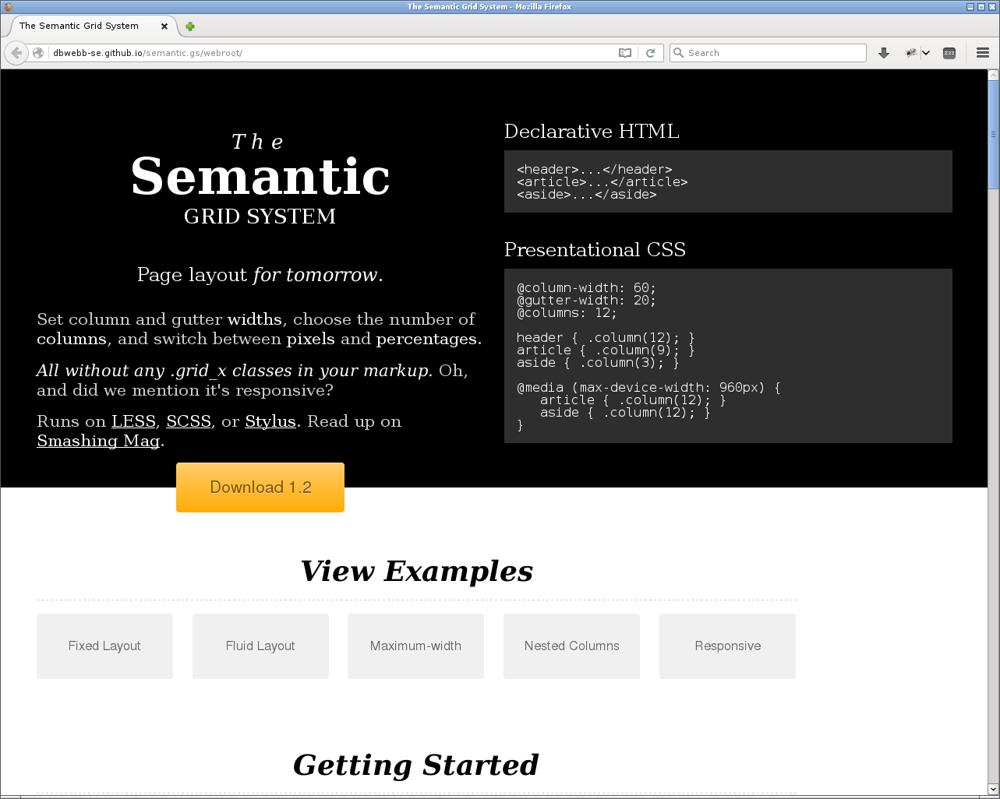

<!doctype html>
<html lang="sv">
<meta charset="utf-8" />
<title>LESS grid</title>

<!-- Mithril HTML Slideshow styles -->
<link href="../css/mithril-slideshow.css" rel="stylesheet" />

<!-- Code formatting using highlight.js -->
<link rel="stylesheet" href="../css/default.css">
<link rel="stylesheet" href="../css/tomorrow.css">
<script src="../js/highlight.pack.js"></script>

<!-- Text formatting using Markdown through showdown.js -->
<script src="../js/showdown.min.js"></script>


<!-- Here comes the slides in order -->
<script data-role="slide" data-markdown type="text/html">
#LESS grid
###Mikael Roos, dbwebb
</script>


<!-- Slide -->
<script data-role="slide" data-markdown type="text/html">
#Agenda

* Vertikalt grid
* Horisontellt/typografiskt grid

</script>


<!-- Slide -->
<script data-role="slide" data-markdown type="text/html">
#Vertikalt grid

</script>


<!-- Slide -->
<script data-role="slide" data-markdown type="text/html">


</script>


<!-- Slide -->
<script data-role="slide" data-markdown type="text/html">
#Vertikalt grid

* Olika CSS ramverk, 960-1100px fixed size
* Förberedda CSS-klasser
* LESS/SASS ger andra möjligheter
* Många varianter på gridramverk

</script>


<!-- Slide -->
<script data-role="slide" data-markdown type="text/html">


</script>


<!-- Slide -->
<script data-role="slide" data-markdown type="text/html">
#Ett gridsystem

* Variabeldefinitioner på gridet
* Antal kolumner, kolumnbredd, gutter
* `column()`
* `row()` för att wrappa kolumnerna
* `container()` för att wrappa raderna
* `clearfix()`

</script>


<!-- Slide -->
<script data-role="slide" data-markdown type="text/html">
#Typer av grid

* Fixed - baserat på pixlar
* Fluid - flyter med sidans bredd, baserat på %
* Responsivt - mediaqueries dölja/visa delar
* Max-width

</script>


<!-- Slide -->
<script data-role="slide" data-markdown type="text/html">
#Float eller Flexbox?

* Två olika sätt att positionera
* Gridet fungerar för båda
* Samma API till gridet
* Välj float om du är osäker

</script>


<!-- Slide -->
<script data-role="slide" data-markdown type="text/html">
#Float eller Flexbox...

```
// float
.row(@columns: @columns) {
    display: block;

.column(@col, @columns: @columns) {
    display: inline;
    float: left;

// flexbox
.row(@columns: @columns) {
    display: flex;
    flex-flow: row wrap;

.column(@col, @columns: @columns) {
    flex: 0 0 auto;

```

</script>


<!-- Slide -->
<script data-role="slide" data-markdown type="text/html">
#[HTML-strukturen](https://github.com/mosbth/anax/blob/master/view/default/index.tpl.php)

```
<div class="outer-wrap outer-wrap-header">
    <div class="inner-wrap inner-wrap-header">
        <div class="row">
            <div class="header"><span>header</span></div>
        </div>
    </div>
</div>

<div class="outer-wrap outer-wrap-flash">
    <div class="inner-wrap inner-wrap-flash">
        <div class="row">
            <div class="flash"><span>flash</span></div>
        </div>
    </div>
</div>
```

</script>


<!-- Slide -->
<script data-role="slide" data-markdown type="text/html">
#Applicera gridet

```
.wrap-all {
    //.showGrid(1100px);
}

.inner-wrap {
    .container();
    max-width: 1100px;
}

.row {
    .row();
}

.flash,
.header {
    .columns(@columns);
}

// Media queries för header bestående av tre delar
@media screen and (max-width: 800px) {
    .site-logo-text {
        .column(16);
    }

    .navbar2 {
        display: none;
    }

    .profile {
        .column(8);
    }
}

// Main-delen
.main {
    .column(@columns * 3 / 4 - 2);
    .push(2);

    &.has-sidebar-left {
        .column(@columns * 3 / 4 - 2);
        .push(1);
    }

    &.has-sidebar-right {
        .column(@columns * 3 / 4 - 2);
        .push(0);
    }

    &.has-sidebar-left.has-sidebar-right {
        .column(@columns * 2 / 4 + 2);
        .push(0);
    }
}

.sidebar-right,
.sidebar-left {
    .column(@columns / 4 + 1);
}

.sidebar-right {
    .push(1);
}

```

</script>


<!-- Slide -->
<script data-role="slide" data-markdown type="text/html">
#box-sizing: border-box

* content-box | border-box
* width inkluderar content
* width inkluderar content, padding, border

</script>


<!-- Slide -->
<script data-role="slide" data-markdown type="text/html">
#När allt är på plats

* Dela in allt innehåll i kolumner.
* Använd kolumner som whitespace.
* Bilder och andra resurser kan matcha gridet
* "Fix" img { max-width: 100% }

</script>


<!-- Slide -->
<script data-role="slide" data-markdown type="text/html">
#Koden

```
/**
 * Responsive Grid
 */
// Default grid, change to fit your requirements.
@columnWidth:   60;
@gutterWidth:   20;
@columns:       12;

// Utility variable, you should never need to modify this
@gridSystemWidth: @columns * (@columnWidth + @gutterWidth) * 1px;

// Use % for fluid layout
@totalWidth: 100% / @gridSystemWidth;


/**
 * A small clearfix:
 * http://stackoverflow.com/questions/211383/what-methods-of-clearfix-can-i-use
 */
.clearfix() {
    &::after {
        content: "";
        display: block;
        clear:both;
    }
}


/**
 * Wrap grid in a container.
 */
.container() {
    margin-right: auto;
    margin-left: auto;
}


/**
 * All columns must be wrapped in a row.
 */
.row(@columns: @columns) {
    display: block;

    width: @totalWidth * (@gridSystemWidth + @gutterWidth);

    margin-left:  -1 * @totalWidth * @gutterWidth / 2;
    margin-right: -1 * @totalWidth * @gutterWidth / 2;

    .clearfix();
}


/**
 * Create a column spanning @col columns.
 */
.column(@col, @columns: @columns) {
    display: inline;
    float: left;

    width: @totalWidth * (((@columnWidth + @gutterWidth) * @col ) - @gutterWidth);

    margin-left:  @totalWidth * @gutterWidth / 2;
    margin-right: @totalWidth * @gutterWidth / 2;
}


/**
 * Push a column @offset columns.
 */
.push(@offset: 1) {
    margin-left: @totalWidth * @offset * (@gutterWidth + @columnWidth) + @totalWidth * @gutterWidth / 2;
 }


/**
 * Pull a column left @offset columns.
 */
.pull(@offset: 1) {
    margin-left: -1 * @totalWidth * @offset * (@gutterWidth + @columnWidth) + @totalWidth * @gutterWidth / 2;
}


/**
 * Pull a column right @offset columns.
 */
.pull-right(@offset: 1) {
    margin-right: -1 * @totalWidth * @offset * (@gutterWidth + @columnWidth) + @totalWidth * @gutterWidth / 2;
}
```

</script>


<!-- Slide -->
<script data-role="slide" data-markdown type="text/html">
#Horisontellt/typografiskt grid

</script>


<!-- Slide -->
<script data-role="slide" data-markdown type="text/html">


</script>


<!-- Slide -->
<script data-role="slide" data-markdown type="text/html">


</script>


<!-- Slide -->
<script data-role="slide" data-markdown type="text/html">
#Det magiska numret

* `@magicNumber`
* Basfontens storlek och vald radhöjd
* Olika typsnitt fungerar med olika radhöjder
* Radhöjd påverkar läsbarheten av text

</script>


<!-- Slide -->
<script data-role="slide" data-markdown type="text/html">
#En multipel av @magicNumber

* Matcha alla typografiska element och dess höjd
* Matcha alla regioner så att deras höjd
* Matcha alla mellanrum, mellan typografiska element och mellan regioner
* Ögat och hjärnan gillar ordning

</script>


<!-- Slide -->
<script data-role="slide" data-markdown type="text/html">
#Storlek på typografiska element

```
// Definiera en mixin
.fontSize(@fontSize) {
    font-size: @fontSize;
    line-height: @lineHeight / unit(@fontSize) * ceil(unit(@fontSize) / @lineHeight);
}

// Aktivera font-size och line-height
h1 {
    .fontSize(2.375em);
}
```

</script>


<!-- Slide -->
<script data-role="slide" data-markdown type="text/html">
#Mellanrum på typografiska element

```
// Lättare att enbart jobba med margin-bottom
h1, h2, h3, h4, h5, h6 {
    margin-top: @magicNumber;
    margin-bottom: @magicNumber;
}

// Definiera som variabler så de kan 
// omdefinieras av användaren
@fontSizeH1: 2.375em;
@colorH1BorderBottom: #666;
@borderSizeH1: 1px;

h1 {
    .fontSize(@fontSizeH1);
    font-weight: normal;

    border-bottom: @borderSizeH1 solid @colorH1BorderBottom;
    margin-bottom: @magicNumber - @borderSizeH1;
}
```

</script>


<!-- Slide -->
<script data-role="slide" data-markdown type="text/html">
#På regioner

```
.outer-wrap-header {
    height: @magicNumber * 2;
    margin-bottom: @magicNumber / 2;
}

```

</script>


<!-- Slide -->
<script data-role="slide" data-markdown type="text/html">
#[Det typografiska gridet](https://dbwebb.se/repo/design/example/typography-grid/less/)

</script>


<!-- Slide -->
<script data-role="slide" data-markdown type="text/html">
#Tips

* Håll basen enkel, lägg inte in massa style i basen
* Tänk bas och anpassning, håll separerat
* Undvik hamna i ett träsk av omskrivande av regler
* Collapsing margins

</script>


<!-- Slide -->
<script data-role="slide" data-markdown type="text/html">
#Uppgiften

* Aktivera vertikalt grid
* Aktivera horisontellt grid
* Välj en trivsam typografi
* Separera basen från anpassningen

</script>


<!-- Slide -->
<script data-role="slide" data-markdown type="text/html">


</script>


<!-- Slide -->
<script data-role="slide" data-markdown type="text/html">
#Tips

* Jobba mest med margin-bottom
* Måste man matcha varje grid-rad?
* Rytmen är det viktiga
* Det typografiska gridet är inte enbart för typografin
* Räkna även in regionerna och whitespace

</script>


<!-- Slide -->
<script data-role="slide" data-markdown type="text/html">
#Tips...

* Kom överens med webbdesignern
* (gridets utformning)
* Tänk hela tiden bas och anpassning, separera

</script>


<!-- Slide -->
<script data-role="slide" data-markdown type="text/html">
#Avslutningsvis

* Frågor på det?

</script>


<!-- Slide -->
<script data-role="slide" data-markdown type="text/html">
</script>


<!-- include essential js-script -->
<script src="../js/mithril.min.js"></script>
<script src="../js/mithril-slideshow.js"></script>

</html>
